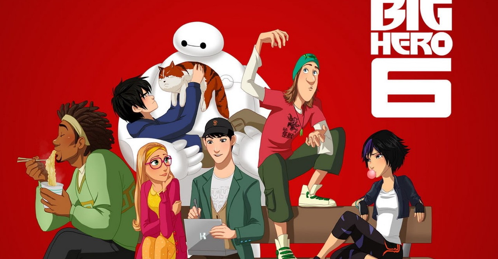

About Baymax
Baymax is a fictional superhero appearing in American comic books published by Marvel Comics. Created by Steven T. Seagle and Duncan Rouleau, Baymax first appeared in Sunfire & Big Hero 6 #1. Baymax begins his existence as Hiro Takachiho's science project.
Baymax & Friends
Baymax's Characteristicks
- He is Inflatable
- He is a health care companion
- He is programed to not do humans any harm
Baymax's Friends
Baymax has geeky friends that loves science and inventing stuff. His best briend is Hiro Hamada, who is the brother of Tadashi who invented Baymax. Click on the links below to read more about them: